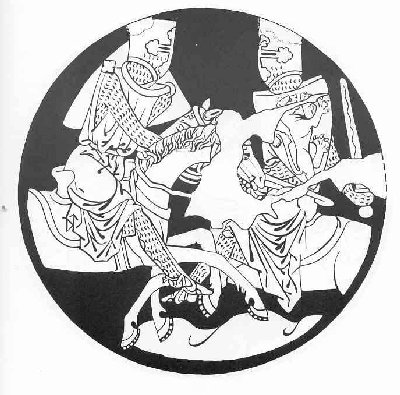
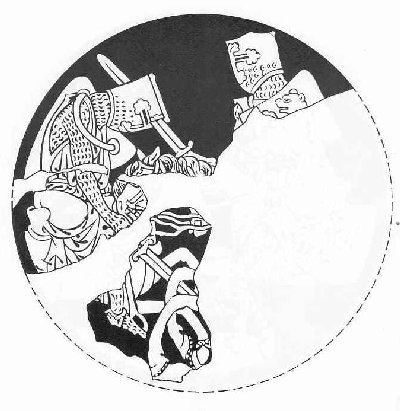

Morolt
Now Rual and all his children
have received their fiefs and heritage
from their lord Tristan's hand.
Tristan commended land and people
to God and set out abroad.
Going with Tristan now 5850
was Curvenal his tutor.
But Rual and all his followers,
the people of the whole country--
was their sorrow any less
and their heaviness of heart
at the departure of their master?
I can tell you, certainly:
All of Parmenie was filled
with woe and tales of woe.
Their sorrow was legendary.
The marshallin Floraete,
loyal and honorable as she was,
took it out on herself
as well a woman rightly may
to whom God has given
a life of woman's honor.
How shall I continue now?
Tristan, for the time homeless,
having just arrived in Curnewal,
very soon heard such news
as caused him the greatest concern.
Morolt, powerful and feared,
had suddenly appeared, from Irlant,
demanding of King Marke,
on threat of armed combat,
tribute of the two lands,
both Curnewal and Engelant.
Here's the story of that tribute:
The king of Irlant at the time,
as I have read in the histories
and as correct tradition tells,
was named Gurmun Gemuotheit,
being native to Africa,
where his father was a king.
At the father's death the land
passed to him and his brother,
as equal heirs, share alike.
But Gurmun had high ambitions
and such a sense of pride
that he would not share ownership
of anything with anyone.
His heart would not permit him
to be less than lord and master.
He began to levy forces,
the strongest and the bravest,
who were known to be
reliable in hard going,
knights and troop leaders
whose loyalty he secured
by payments or with blandishments, 5900
whatever it took to get them,
then handed over to his brother
all his claim to land or holdings.
He set out at once with this band,
having carefully secured
license and commission
from the sovereign Romans
that whatever he could win by force
should be his, and his alone,
yet granting them some measure
of glory in his conquests.
Nor did he then delay longer,
but set out with a powerful force
over lands and over water
until arriving in Irlant,
he gained victory in that country
and so subdued them by force of arms
that whether they liked it or not
they had to acknowledge him lord
and take him as their king.
After that it came about
that they aided him always
in subduing nearby lands,
which they took by storm.
In the course of these campaigns
he also brought into his grasp
Curnewal, along with Engelant.
Marke then was still a child,
as such not able to resist,
and thus deposed from power
fell under tribute to Gurmun.
Gurmun had one great advantage,
from which he drew strength and honor:
he had married Morolt's sister,
thus becoming formidable.
Morolt ranked there as duke
and very much would have liked
to possess a state of his own,
proud and bold as he was,
owning riches and territory,
with fighting spirit and a strong arm.
He was Gurmun's champion.
As to the amount of the tribute
that Irlant was to receive
from each conquered land,
I'll tell you truly and exactly:
the first year they had to send
three hundred marks weight in bronze,
not any more than that;
the second year in silver, the third in gold;
in the fourth Morolt invaded 5950
from Irlant in full battle strength,
well prepared for war or combat.
He summoned to appear before him
from Curnewal and from Engelant
the barons and their nobles.
He forced them to decide by lot
in order to appease him
who should give him their children,
all of serviceable age,
being in growth and person
as handsome and agreeable
as required by courtly standards
(no maidens, only boys),
the required number being thirty
from each of the two lands.
To contest this outrage
there were only two options:
it could be done by single combat
or by general warfare.
They had but little hope
of resorting to full-scale war,
the lands being in decline.
And Morolt himself was so big,
merciless, and threatening,
that up against him not a man
would look him in the eye
and dare to risk his life
any more than a woman.
After the tribute had been sent
on its way, off to Irlant,
as the fifth year began,
once again, at the solstice,
the countries were required to send
from each a delegate to Rome,
someone suited to the mission,
who should there be informed
what instructions and commands
the all-powerful senate
decreed and distributed
to each and every land
under Roman jurisdiction.
For every year by proclamation
the decrees were made known
as to which procedures were correct
in accordance with Roman law,
and what the rules for justice were,
how they were to govern themselves
according to the given precepts.
This mission and obligation
the two lands fulfilled 6000
every fifth year as reqired
for their mighty mistress Rome,
although they did her this honor
not so much by law
nor by religious rites or custom
as by the power of Gurmun.
Now let's get back to the story.
Tristan had heard all about
this great distress in Curnewal.
He also knew, of course,
the terms of the security
by which this tax was extracted.
Now he heard his countrymen
lamenting sadly every day
this disgrace upon their country,
everywhere he chanced to ride,
before the cities and the strongholds.
Now when he returned to Tintajel
for the regular court attendance,
he was assailed on every hand,
in every street and pathway,
by grief so unrestrained
that he was affected deeply.
Soon the news reached Marke
and spread throughout the court
that Tristan had arrived.
This may have cheered them all,
although such cheer, I mean to say,
was tempered to their suffering,
because the finest men there were
in all of Curnewal
had gathered at this time
to pay respects at court
for dishonor, as you have heard.
The peers of the nobility
had come to cast lots
for the loss of their children.
Tristan found them all
on their knees and in prayer,
and everyone prayed separately,
shamelessly and openly,
with eyes overflowing,
with distress most earnest
in body and in heart,
that God in his goodness
might protect and save
his child and his respect.
Now while they all were thus in prayer,
Tristan came and approached the court.
And what reception did he find there? 6050
That is readily told:
Tristan was in truth received
by all of that company,
by each and every one,
and even by Marke himself,
with less warmth and kindness
than surely would have been the case
had they been free of such oppression.
But Tristan took little notice,
making his way immediately
to where the lots were being drawn,
in the presence of Marke and Morolt.
My lords,
he spoke, --I address you all
by that one name and title,
who have come running here
to sell out your nobility--
have you no shame at this affront
to your land and to you?
So courageous as you are
at other times, in all perils,
you now have every reason
to be increasing the respect
due you and your country both,
to harvest greater honors!
And yet you lay your freedom
at your enemy's feet
and hand it to him openly
with this infamous tribute.
And all your most noble offspring,
who ought to be your first delight,
your pleasure and your very life,
you're giving them, yet again,
into vile servitude,
although none of you can show
who is forcing you to do so,
or what the great compulsion is,
except one man and a single fight.
Nothing else is forcing you.
And among the whole crowd of you
you can't come up with one man
who'll weigh his own life in the balance
against this other single man,
chancing either defeat or victory.
And if it chance that you lose--
certainly that sudden death
and your present endless misery
will have a very different weight
here on earth and in heaven.
But if it chances that you win,
and injustice winds up the loser, 6100
then you're assured eternally
God's grace there, honor here.
Yes, fathers ought to give their lives
for their children; this is godly,
since their lives are one and the same.
But it's against God's commandments
to surrender your child's freedom
into abject servitude,
to make a serf out of him
who rightly lives freely.
If you will hear my advice
how to live for God and honor,
this is what I say:
select a man from your number--
if such a man is to be found
among this citizenry--
someone with the will to fight
and ready to leave it up to chance
whether he survive or no,
and pray for him, all of you,
by God's will, above all else,
that the Holy Ghost grant to him
honor and good fortune,
so he needn't greatly fear
Morolt's size and battle powers.
Let him put his trust in God,
who never yet deserted one
who acted in the cause of right.
Now take counsel quickly--
decide without delay
who shall free you from this vice
and save you from this one man!
Never again so dishonor
your estate and heritage!
Oh, sir,
they cried, with one voice,
that's not so easy, with this man.
No one can stand up to him.
Stop such talk,
Tristan snapped.
By God, remember who you are.
You are by birth, after all,
the equal of all royalty,
as high as any emperor,
and you mean to sell your noble children,
as highborn as you yourselves are,
to hand them over and abandon them
to be made into servants?
Well, if there's not a one of you
whose fighting spirit is roused by this,
who for the sake of your common grief
and the impoverishment of the country 6150
will dare to meet in combat
by law and in God's name
that one man alone,
if you see fit to leave it
up to God and up to me,
I tell you truly, my fine lords,
for God's sake I will adventure
all my youthfulness and life,
and undertake this fight for you.
God grant that it go in your favor
and restore to you your rights!
Whatever the outcome is,
if perhaps other than well for me,
your rights are not impaired by that.
If I lie dead from this encounter,
by no means are your obligations
affected thereby in any way,
made greater or diminished.
You're right back where you were before.
But if the result is fortunate,
that is surely by God's will,
no man can take credit for it.
Now, this man I am to meet,
as I have often heard at length--
he is a man of strength and courage,
of long-practiced knighthood,
a much-experienced veteran,
whereas I am just beginning
to practice matters such as these
and count myself among the knights
perhaps not the best choice
to fill our present need.
Still I can muster for this combat
two victorious assistants:
one is God, the other, the law.
They go with me into the fray.
I also have a willing spirit,
which is a strong thing in a fight.
With the help of these three standbys,
though I be otherwise untried,
I have every confidence
of overcoming a single man.
Sir,
the assembled knights exclaimed,
may the holy power of God,
by which the whole world was made,
recompense you for the comfort
and for the welcome ray of hope
you have given all of us.
Sir, to make a long story short,
we've accomplished nothing in our councils. 6200
If fortune had been on our side,
as often as we have tested it,
as many times as we have sought,
by now we would have succeeded.
Not only on one occasion
have we here in Curnewal
met to deal with our troubles.
Our discussions have been many,
but through them all we never found
one of us who wouldn't rather
send his child into bondage
than sacrifice his own life
against this most monstrous man!
What sort of talk is this?
said Tristan.
Many strange things have happened.
There has been no end of cases
in which wicked arrogance
was brought down by a lesser force.
That may well occur again,
for one who dares to try it.
Morolt, hearing all of this,
was taken aback that Tristan,
so immature did he seem,
talked so hotly of duelling,
and conceived a deep dislike for him.
Tristan went right ahead.
My lords all, how say you now?
What is your wish, how shall I act?
Sir,
they all replied in chorus,
if it could come about,
this prospect you have offered us,
if this indeed could be accomplished,
that is what we would desire.
That is what you want?
asked Tristan.
This has gone on long enough.
If now it is to fall to me,
provided God will grant it,
I will put it to trial
whether God intends for you
any blessedness through me,
and whether I have any fortune.
Marke at once tried to dissuade him
with whatever he could think of.
He hoped to win him over
by urging him to renounce it
just for his own sake.
But no, that by God he would not.
Not by request or command
could Marke persuade him at all
to give it up for his sake. 6250
Tristan instead confronted Morolt
and again began to speak.
Sir,
he addressed him, tell me,
so help you God, what do you seek?
Friend,
replied Morolt quickly,
why do you ask? You know quite well
what I want and what I came for.
Then Tristan cleverly declaimed,
Ye lords all, now hear this--
my lord the King, and all his men!
Morolt, Sir, indeed you're right.
That I know, all too well.
And as vicious as it is,
still it is a fact
that none can possibly ignore.
This tribute from here and Engelant,
over far too long a time now,
has gone to Irlant without just cause.
This has long been fought over
with the clash of powers,
force against force.
Entire lands have fallen,
both cities and fortresses,
and their unarmed people suffered
so great and many depredations
that they were overcome at last
by violence and injustice.
The few hardy stalwarts
that managed to survive
were subjected without mercy
to every demand of the victors,
fearing for their very lives.
Helpless after such mistreatment,
at that time they had no choice.
Thus it happened that injustice,
as you see still today,
has been their lot ever since.
It is now long overdue
that they should have taken up arms
and thrown off their former weakness,
for now they have advanced greatly.
The increase has been overall.
There are more people, more arrivals,
more cities, more defenses,
more wealth and more respect.
It's time to set to rights
what until now have been wrongs,
and the only recourse we have
is to resort to force.
For if we hope to survive, 6300
we must consolidate that hope
by force of arms and campaigns.
We have the manpower to do so;
both lands have plenty of that.
It's time that we be given back
all the things that all our lives
have been stolen from us by force.
We can do that for ourselves,
and that right soon, God permitting.
Whatever others have that's ours,
no matter how great or small--
whoever does as I want
and follows my advice in this--
they will refund us everything,
even to the smallest trifle.
And then we'll see our bronze
converted to red gold.
Many very strange things
have come to pass, here on earth,
that have been but lightly regarded,
and the noble children of these lords,
now impressed into servitude,
they may yet have freedom again,
little though they may expect it.
By God may I be granted this!
It is in his name I ask
that by the power of my own hand,
with the aid of my countrymen,
I may plant our nation's colors
in the very soil of Irlant,
so that land and territory
may be humbled before me!
To this Morolt replied: Sir Tristan,
I think you would be well advised
to treat these matters and conditions
with rather less concern,
because regardless of all this talk,
we have no intention of renouncing
anything that's rightly ours.
Then he went to stand before Marke.
King Marke,
he began, now speak,
let's hear from you and all of those
gathered here before us now
to deal with me as to their children.
State this matter for me clearly:
is that your will, all of you,
and also your firm intention,
as your spokesman Sir Tristan
in his speech has proclaimed it?
Sir, it is, we all agree, 6350
that is our will and our intention,
watever he says or means to do.
Morolt replied: thus you are breaking
your oath and the pledge you made
to my master and to me,
and all of the assurances
ever arrived at among us.
The courtly Tristan interrupted:
Nay, sir, that was ill-spoken.
It sounds unpleasant, when you question
any man's good faith.
None of them are breaking
either their pledge or oath.
An affirmation with security
has been concluded between you,
which should be left in force, as is:
that from Curnewal and Engelant
either the levy agreed upon
would be sent every year
to Irlant, in good faith,
or armed resistance would be offered,
by single combat or by war.
If they adhere to the conditions
and fulfill their pledge and vow,
either with tribute or trial of strength,
they do you full justice.
Sir, consider the matter now.
Take counsel and then let me know
how you prefer to have it done,
to which method you will leave it,
single combat or general warfare.
We grant you now these options,
or at any time, you may be sure.
But only by spear and sword
can we accomplish a decision.
Now make your choice of the two,
and tell us which one you want.
We're no longer paying ransom.
To this Morolt replied, Sir Tristan,
I came here in some haste.
I know well, which I prefer.
The manpower I have with me
is not what I require
to offer general battle.
I left my land and crossed the sea
with no more than a token force
and arrived with peaceful intentions
here in this kingdom,
just as I have done before.
I supposed it would all go smoothly. 6400
I hadn't foreseen all this trouble
with these landholders of yours.
I expected to depart
in justice and in friendship.
Now you are proposing warfare,
which is more than I'm prepared for.
If you really want a war,
said Tristan in reply,
turn around right now,
go back home to your own country,
summon all your armed forces,
muster all the power you have,
then come back here, and we shall see
what the final outcome be.
And if you fail to do this
before this year's half out,
we'll take it as an invitation.
We will surely come to you.
Up to now we've been treated
with force matched against force
and power against power.
If it's the job of chivalry
to overthrow sovereignty
and make slaves of masters,
and that's the way it's supposed to be,
then we're ready to trust in God
that the feebleness we have suffered
will now be imposed on you.
God knows, Sir Tristan,
Morolt replied,
it's plain to me that any man
who had never heard such bold fanfares
nor anything like the threats you make
might well regard such things
with some anxiety.
But I'll come through all right, I'm sure.
I have been there often enough
where high-flown talk and arrogance
were paraded in such speeches.
It's also my considered opinion
that Gurmun needn't be concerned
about his people and his land,
for all your flags and strong right arm.
For I can tell you, this insolence
of disregarding your pledge to us
will never reach as far as Irlant.
The two of us, you and I,
will deal with it, hand to hand,
and decide, in the battle ring,
who is right, you or I.
To this Tristan retorted, 6450
With God's help I'll prove it,
and damned be whichever
of us two is in the wrong!
And whipping off one of his gloves,
he presented it to Morolt.
Ye lords,
he spoke, witness this:
the King, my lord, and all of you
present here, who hear this,
I undertake in this contest
that I commit no injustice:
that neither this Lord Morolt,
nor whoever sent him hither,
nor did any man, by force,
justly gain the right of tribute
from Curnewal or from Engelant.
This will I, by my hand,
manifest and prove true,
before God upon this lord
who stands here before us now
and who has so long brought upon us
such dishonor and oppression
as has ever afflicted our two lands.
There broke forth immediately
from every heart and mouth
many a noble cry to God
that by his commandments
their subjugation might be lifted,
with their disgrace and suffering.
But however deep their concerns
about this fight might be,
they didn't affect Morolt
very deeply at all.
He remained quite unmoved.
As a much experienced veteran
he did not refuse the challenge.
Instead he returned
his acceptance of the duel
with one haughty gesture
and a hostile countenance.
A venture such as this
was just the sort of thing he liked.
He was sure of winning it.
Now that the terms had been agreed,
the meeting of the two combatants
was set to occur in three days.
When that third day arrived,
there came such a press of people
that it seemed the entire population
was descending all at once
on that field, by the sea. 6500
Morolt went to arm himself.
With the story of that armor
or with fables of his strength
I'll not exhaust my attention,
nor take the edge off my description
by going too meticulously
into every little detail,
so often has he been already
widely praised for manliness.
His potency is multiple,
known in every land and kingdom
for courage, stature, and brute strength
befitting perfect knighthood.
Here no more such celebration.
I know well that he was able
in that and every other trial
to thrust and parry with the best,
to give good account of himself
by all the rules of knighthood,
for often had he done so.
But as to good King Marke,
the coming trial by combat
afflicted him with heartache
such as no faint-hearted woman
ever suffered for a man.
He had but the slightest hope
it would not mean Tristan's death,
and greatly would he have preferred
to bear the burden of tribute
if only to avoid this duel.
And yet it all turned out better
as to both his deep concerns,
about the tribute and the man.
Tristan, as yet untested
in such obligations
made up for lack of experience
with the finest armor
he could possibly obtain.
His torso and all extremities
were protected as a whole.
He wore a piece of the finest work,
two leg-guards and a hauberk,
all light and gleaming,
from a master armorer's hand
who had used skill and wisdom
in fabricating them.
His noble friend Marke
acting as his second
bound on the splendid spurs
with tears in his heart, 6550
then fastened the retaining straps
all with his own hand.
Then a surcoat was brought him,
wrought, as I have heard,
by needlecraft on frames
in every seam and fold
over its whole extent
by the hands of ladies
with exotic intricacy
and finished to perfection.
Then, ho! Berobed in such as this,
how elegant and admirable
he surely must have looked,
a marvel for description!
--Except that I have no intention
of spinning out so many words
as I would have to use
to really do it justice.
But this, at least, you should know:
the man better became the costume,
investing it with praise and honor,
than did the coat ennoble the man.
However admirable or fine
his surcoat might be,
compared to the nobility
of him who wore it now,
it was hardly worthy.
Then over all Marke girded
the sword that was his life and heart,
which was to be his main salvation
from Morolt and many a later peril.
It hung at just the right angle
and lay correctly suspended
to be drawn conveniently,
neither riding up too high
nor below its proper grip.
Then they brought his great helmet,
of a color crystalline,
gleaming as well as strong,
the handsomest and best
any knight ever wore.
I doubt that ever a better one
had yet come to Curnewal.
On its crest stood the arrow,
the oracular sooth of love,
which as to love, eventually,
would prove itself upon him well,
even though, perhaps, much later.
Alas, nephew,
Marke sighed,
as he set it on his head, 6600
I cry to God to see you thus.
Everything I will renounce
such as men account a pleasure
if I'm to suffer pain for you.
A shield also then was brought,
on which an expert hand had worked
the finest of its craft,
the whole shining bright as silver,
thus to be a match
for the mail and helmet.
it had been so well burnished
and given such a gleam
as might a new mirror have.
The wild boar engraved upon it,
a masterpiece of workmanship,
stood out coal-black in sable.
This too his uncle girt him with.
Well it suited this imperial scion
and was borne at his side
on this and every later occasion
as though it were a part of him.
Now that Tristan, young in manhood,
agreeable and praiseworthy,
had finally taken up the shield,
these masterpieces of workmanship,
helmet and body armor,
shield and leg protection,
conformed each to the other
as though the master craftsman
had designed all four of them
such that the perfection of each
should heighten the splendor of the others,
so that the effect of all four
could not have been more impressive.
But yet the fresher wonder,
concealed inside and beneath,
to the downfall and consternation
of his enemies and opponents--
what of the power he could exert
compared to all the exotic work
prefiguring it on the outside?
This I know, as sure as day:
however fine the exterior,
the mold inside it all
was of much finer design,
realized in higher mastery
of the true form of knighthood
than all the outer handiwork.
The work that was inside,
as to concept and to finish, 6650
was accomplished most praiseworthily.
The wisdom of its craftsman--
ho, how brightly it shone forth!
His arms, his legs, his whole torso
were wealthy in nobility,
perfectly formed and elegant.
The iron mail that covered them
conformed to them perfectly.
A groom held his horse ready.
Neither in Spanjen nor anywhere else
was one more splendid ever bred.
It showed no weakness anywhere,
being full and broad
across the chest and quarters,
with both flanks well-muscled,
ideal in every respect.
And as to its legs and hooves,
here it also very well
showed the best conformation:
the hoof was round, the leg straight.
It stood erect on all four,
with the symmetry of a wild beast.
Its bloodlines plainly were the best.
The withers and the forequarters
were of the form desirable
for a charger such as this.
It was covered with a white trapping,
bright and pure as afternoon
so as to match the armor's shine,
of such length and so ample
that it fell very smoothly
almost to the horse's knee.
Now that Tristan was equipped
as knighthood required
by the customs for combat
with the best of finery,
those who knew how to apprize
both men and armor
all were of the same opinion,
that both armor and the man
were as fine as any ever seen.
And yet the sight, however fine,
soon was much finer still.
For after Tristan had mounted
and taken the lance into hand,
then the sight was truly splendid,
the knight at his most admirable,
from above the saddle to below.
He had an easy, broad reach
across arms and shoulders. 6700
He also knew very well
how to take the correct seat
well and firmly in the saddle.
Down beside the horse's shoulders
his legs fell in good style
straight and smooth as two staves.
So well did the horse accord
to the man, and then in turn
the man conform to the horse,
that it might have seemed the two of them
were born and had grown together.
While mounted, Tristan's every move,
stately and deliberate,
showed his fine horsemanship.
And yet however noble
his riding skills might be,
the spirit that dwelt within them
was so good and so refined
that no nobler spirit or refinement
ever went beneath a helmet.
Now for the two champions
a battleground had been appointed,
a small island in the sea,
but close to shore and onlookers
so that whatever happened there
could be observed easily.
It had also been agreed
that except for these two men alone
no other should set foot there
until the fight had reached its outcome,
and all adhered to this condition.
Then for the two contestants
two small boats were provided,
each of them just big enough
conveniently to carry across
one armed man and his horse.
There the little ships lay ready.
Morolt quickly boarded one,
and taking hold of the sweep
set across to the landing.
And there, when he had disembarked,
he drew his boat up at once
and made it fast to the dock.
Then he sprang into the saddle,
took his lance into his hand,
and at a gallop charged about
here and there over the land
that lay open on the island,
and whenever crossing the appointed field
delivering mock knockdown blows 6750
as though it were all a sportive jest.
Now when Tristan had boarded his boat,
taking with him all his equipment,
both his charger and his lance,
he took a stance in the bow.
My king,
he spoke, Lord Marke,
be not now too deeply concerned
about my person and my life.
We must leave such things to God.
Our fears help not in such matters.
What if, perchance, it turns out better
than may have been foreseen for us?
Neither our fortune nor victory
are due to any knightly craft,
but only to God's power alone.
Now leave aside all premonitions,
for I may very well prevail.
And as to the present matter,
I am but little concerned.
Be likewise: take good cheer!
It must turn out, as it must.
And however that may be,
to whatever end things lead,
trust your land and your people
into the care of that same one
in whom I have put my reliance:
God himself, who shall go with me
into the ring and into combat,
may he set rights to right!
For either God must win with me
or suffer loss with my defeat.
It is his to decide!
With this he gave them all his blessing,
and casting off his little craft
set across in God's name.
With one breath his life and body
were commended by many a mouth to God.
The wave of many a noble hand
sent sweet blessings after him.
When he reached the far shore,
he at once cast his boat adrift
and took his seat in the saddle.
Morolt reined up there at once.
Now tell me,
he said, what is this?
Letting your boat go like that--
some sly aim or trick of yours?
That I did for this reason:
there's one boat here, and two men,
nor can there be the slightest doubt 6800
that either they both will fall here,
or one of them, that is certain,
must lie dead on this field,
and then the other, remaining victor,
has all he needs in this boat
that brought you over to this place.
Well I know,
Morolt replied,
that this is inescapable,
the battle must and will take place.
If only you would renounce it
and we were to part in friendship
upon such an agreement
that my right of tribute
from these lands is granted--
that, I think, would save you.
For I would very much regret it
if I simply have to kill you.
Never did a knight before
quite so please me, as do you.
But Tristan spoke courageously:
This tribute must be put aside
if we are to be reconciled.
Nay,
his adversary countered,
there's no truce in that direction.
That's not the way to solve this.
When I leave, the tax goes with me.
In that case,
Tristan replied,
we're only making useless talk.
Morolt, if indeed, as you claim,
you're so sure of killing me,
defend yourself, if you would live.
He threw his horse about,
then coming out of his turn
went into a direct charge.
He came on fast and straight
with everything he had,
his lance exactly leveled,
with all legs flying,
ankles and spurs rowelling
into the horse's flanks.
Should the object of this attack
wait calmly, his life at stake?
No, he did what all those do
who have devoted everything
to true manliness:
he also rode a loop
as he so liked to do,
fast away and returning faster;
raised the lance, then settled it 6850
and came straight on, at full speed,
like a man the devil is driving.
Horse and man as one
came at Tristan flying
faster than any falcon.
No less was Tristan's greed for prey.
Each as eager as the other
they clashed with one another
shattering each other's lances
which splintered against the shields
into a thousand fragments.
The next act began
with both drawing their swords.
God himself might have watched
their mounted fight with excitement.
Now, I hear everyone say,
and, indeed, so goes the story,
that they met in single combat,
and all of you, I'm sure, will claim
that must mean just two men.
But I can demonstrate on this occasion
that it was a pitched battle
between two whole troops.
I've never read this, I admit,
in any of the Tristan tales,
and yet I can confirm it:
The truth told about Morolt
has always been and still is
that he had the strength of four men,
which adds up to four knights
fighting on the one side.
Arrayed against them on the other
were first God, and then Right;
the third was vassal of these two,
their unswerving subject,
the unswerving Tristan.
The fourth was robust courage,
which can work wonders in times of need.
From this four and the other four
I can quickly put together
two whole squads, eight men in all,
poor as I am at addition.
So you may have thought this whole story
altogether unreasonable,
with two armies on two horses
joining battle against each other.
But now you know the situation,
that under one helmet on each side
four fighting units of knighthood
confronted the same on the other. 6900
And now (lest I delay further)
they rode savagely at each other.
Here came one company,
Morolt, strong as any four,
to hurl his thunder against Tristan.
Wicked minion of the Fiend,
he struck him with a blow so forceful
as very nearly to deprive him
of all his strength and senses.
Had not his shield protected him,
behind which he skillfully
managed to deflect the blow,
neither his helmet nor breast protector
nor anything other of his armor
could by any means have prevented
his being slain through his mail.
Morolt pressed his advantage hard,
keeping him down with a rain of blows.
So he continued, blow after blow,
until his many blows obtained
that Tristan, in peril of so many blows,
advanced his shield a bit too far,
thus raising his guard just enough
that Morolt struck him through the thigh,
causing a wound so deep and ugly
as very nearly to be fatal.

His torn flesh and the very bone
showed through the leg guard and mail,
and the blood spurted up and out,
covering the battle ground.
Well,
snarled Morolt, do you yield?
By this you can see yourself
that no man has a right to wrong.
Wrong you are, and there's the proof.
If you hope to survive at all,
consider now, how that must be:
for truly, Tristan, the wound you have
is going to be the end of you.
The remedy is through me alone--
no other, be it man or woman,
can ever restore you to health,
for you are wounded with a sword
engorged with a lethal poison.
No physic, nor physician's cunning,
can release you from this fate,
unless it be Isolt, my sister,
yes, she, the Queen of Irlant.
She is versed in every sort
of vegetal and herbal science,
the whole of medicinal mastery. 6950
She alone knows these tricks,
only she, no one else.
Unless she heal you, you are lost.
Now, perhaps, you will comply
and recognize my right to tribute.
And then the queen, my sister,
will work her healing arts on you,
and I will even share with you
companionably, what I have,
nor, I say, will I cheat you
of anything you may desire.
Tristan replied: Not my right,
nor my honor do I yield you,
not for your sister, nor for you.
In the power of my free hand
I still hold two free lands
which I take with me when I leave,
unless I suffer in defending them
far worse wounds, or even death.
Nor is this single wound enough
to force me to a settlement
decided by it and it alone.
This fight between the two of us
is a long way from being over.
That tax will be your death or mine--
there can be no other way.
He spurred his horse at him again.
Now, someone may start inquiring--
in fact, I'm wondering myself--
by God's truth, where are they now,
those comrades-in-arms of Tristan?
Whether they're really going to help him
I have good reason to doubt.
They're certainly taking their time,
now that their vaunted company
has taken heavy casualties.
Unless they arrive soon,
they'll arrive all to late,
so they'd better come right now!
Here are two attacking four,
fighting for their very lives,
a prize that hangs in the balance
very much in gravest doubt.
If there's any hope of rescue,
it has to come without delay!
Then God and Right came riding in
with the just decision,
relieving their defenders,
throwing down their foes.
Now the odds had been evened, 7000
company against company,
four against four.
Now rank again faced rank,
and Tristan, finding the support
of these, his reinforcements,
had new strength and courage.
These auxiliaries brought him
both new heart and strength.
He spurred his horse viciously,
and came on flying with such force
that just as he had intended
he crashed head-on into his foe
in a collision so violent
as to knock him down entirely,
man, horse, and all.

No sooner had Morolt begun
to recover from the fall
and was trying to remount,
than Tristan was suddenly upon him.
Striking powerfully at his helmet,
he sent it flying off and away.
But Morolt came at him on the run,
and striking clean through the trappings
whacked off a leg of Tristan's horse.
As it fell to the ground beneath him,
Morolt, not pressing his attack,
leaped aside and made off.
Full of cunning as he was,
he threw his shield over his back,
one of his standard tricks.
With a free hand he reached down
and managed to retrieve his helmet.
For an immediate strategy
his intention was first of all
to get remounted, if he could,
then strap the helmet back on
and charge again at Tristan.
With a firm hold on the helmet
he rushed to mount his horse
and had got just so far
as to get hold of the reins,
almost get his left foot
firmly in the stirrup
and reach with a hand for the saddle,
when Tristan caught up with him.
He struck so hard at the saddlebow
that Morolt's sword and right hand
both fell severed to the ground,
with the mail and everything.
Even as Morolt fell 7050
he delivered another stroke
right at the cape on his head.
It penetrated to such a depth
that when he drew the weapon out
the result of this mighty blow
was that a piece of the sword's edge
remained lodged in the victim's skull.
One day that piece would bring Tristan
great trouble and greater danger,
very nearly causing his death.
Morolt, now a beaten troop,
powerless and defenseless,
tottering and swaying,
at last fell and succumbed.
How now, how now?
said Tristan.
Tell me, Morolt, by God,
can you at last make sense of it?
It seems to me, you're badly hurt--
in fact, your chances don't look good.
As sorely hurt as I may be,
it's you that needs powerful herbs.
Whatever lore your sister Isolt
may have acquired about medicine,
to cure you will take it all.
God the just and accurate
and God's most true commandment
have examined your injustice
and justly given me justice.
May he continue to judge for me--
this haughtiness has been brought down!
With this he approached the prostrate form,
and reaching for his sword,
he drew it with both hands
and struck from his opponent
the head and cape together.
Then he returned to the landing
where he found Morolt's boat,
and boarding it he pushed off
toward the land where the people waited.
There beside the sea he heard
great rejoicing and great lament--
both joy and lament, just as I say:
for those to whom his win brought weal
it was a day of high blessing,
and they gave vent to high rejoicing.
They clapped their hands noisily,
they praised God with every voice,
they sang at once to the heavens
a mighty hymn of victory.
But for the visitors from abroad, 7100
those unfortunate guests from Irlant
whose mission had brought them there,
the day shone only on their pain.
From them rose groans as loud
as the anthems of the victors.
They wrung their hands, their agony
tormented them relentlessly,
sorrowers on foreign soil,
the sorrowing Irlanters.
As they turned to go
and board their ships for home,
Tristan approached them
and addressed them on the shore.
Ye lords,
he said, go over,
and collect that tribute now
which lies there on the battlefield.
Take it home to your master
and say to him that my uncle,
King Marke, and his land,
send him this submission
to remind him of this:
whenever it happens to be his whim
or when he decides to command
his emissaries to come here
for more tribute such as this,
by no means will we ever
let them leave empty-handed.
That is the respect
with which we'll submit it,
whatever it costs us to do so.
But all the while, during this speech,
he was hiding with his shield
his great bleeding wound,
keeping it a secret.
He had to maintain this pretense--
In case the Irish should return,
none of them must know.
They had left immediately
to cross over to the island
where they found their master's remnants,
a dismembered man.
They took up the pieces and departed.
When they arrived in their country
they gathered in their hands
the grisly consignment
they had been charged to deliver--
the parts, I mean, all three of them.
Being careful to keep them together
lest anything might be lost,
they brought them before their lord 7150
and repeated to him what I have told you
they had been charged to say.
I think, and I can well imagine,
just as you might expect me to,
that King Gurmun Gemuotheit's mood
was moody in the darkest way,
for this had been a serious loss.
He lost along with this one man
heart and spirit, support and power
and prowess equal to no few knights.
The escutcheon of his authority
that Morolt had brandished everywhere
in all the adjacent nations
was now fallen and laid low.
But the queen, Morolt's sister,
had even greater cause to grieve,
to exclaim in sorrow and destitution.
She and her daughter Isolt
were extravagantly mortified,
as well you know how women act
who have suffered some deep grievance
that strikes near to the heart.
They regarded the dead man closely
if only to increase their grief,
so that their heartfelt pain
might be so much the greater.
They kissed the head and the hand
that for them had subjected
so many lands and peoples,
as I have already told you.
They examined the wound in the head
over its full extent,
with much anxious grief.
Then the wise and clever queen
chanced to see the fragment
of the blade's edge embedded in it.
With the help of small pincers
they probed and reached into the cut
and managed to extract the splinter.
The two of them inspected it,
still grieving and lamenting,
then put it carefully away
in a small reliquary.
In time it would put Tristan
into great peril.
But now, Sir Morolt, he is dead,
and if I go on at length
about his people's mourning,
what would be the use of that?
No one will be the better for it. 7200
Who would lament all their laments?
Morolt was borne to the grave
and buried just like any man.
Gurmun mourned officially
by issuing an edict
with force of law in all of Irlant,
enjoining every subject that,
if any living thing whatever
were found to come from Curnewal,
it must be killed at once,
be it woman, be it man.
This disbarment and decree
were applied with such exactness
that no one, on whatever errand,
or on whatever occasion,
if being of Curnewal stock
could possibly enter the land,
regardless of bribe or surety,
whatever inducements he might offer,
without it costing him his life.
Many an innocent mother's child
would suffer from this rigid stricture,
and all in all to no avail,
since Morolt lay deservedly dead.
Never had he trusted God,
only in his own strength,
and always went into battle
wherever and for any cause
in violent arrogance,
by which he also met his end.